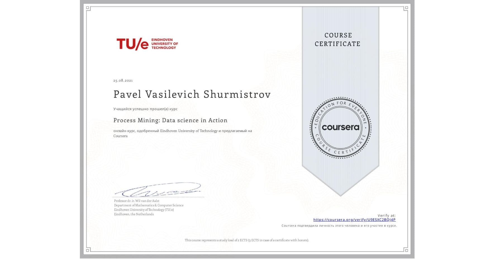

Qlik extension · v1.5.3
Process Mining / Qlik Sense
Процесс
становится видимым.
Process Flow Analyzer строит интерактивную карту переходов прямо на листе Qlik Sense: показывает маршрут кейсов, объём потока и среднее время между событиями.
ZIP · 9 КБ · документация включена
1 434 · 6 ч
1 332 · 18,3 ч
203 · 57,7 ч
01 / STARTЗаказ создан1 434 кейса
02 / CHECKОплата1 332 кейса
03 / FLOWКомплектация1 129 кейсов
04 / DONEДоставка1 086 кейсов
BOTTLENECKЗадержка203 кейса
01 / ВОЗМОЖНОСТИ
Не просто граф.
Рабочий объект Qlik.
Расширение получает уже рассчитанные переходы из hypercube и остаётся частью ассоциативного анализа: карта реагирует на выборки и сама помогает фильтровать процесс.
Операции и переходы
Карточки показывают этапы процесса, толщина связей — относительный объём кейсов, а направление линии — ход процесса.
Время и узкие места
На переходах видны число кейсов и среднее время. Цвет помогает сравнить быстрые участки, средние переходы и задержки.
Выборки в Qlik
Нажатие на переход выбирает исходное и следующее событие, связывая карту с остальными объектами листа.
Две ориентации
В свойствах объекта можно переключаться между горизонтальной и вертикальной раскладкой процесса.
Масштаб и перемещение
Колесо мыши и кнопки меняют масштаб, а перетаскивание помогает работать с разветвлённой картой.
Текущий контекст
Объём и относительная шкала времени пересчитываются вместе с текущими выборками приложения.
02 / ИНТЕРФЕЙС
Карта процесса
в двух направлениях.
Один и тот же объект можно встроить в аналитический лист или развернуть отдельно для подробного изучения маршрутов.
03 / ЭКСПЕРТИЗА И МАТЕРИАЛЫ
Разобраться
в Process Mining.
Сертификат подтверждает профильное обучение, а два авторских видео объясняют сам метод, его место в BI и применение для цифровизации процессов.

Открыть крупно ↗
CERTIFICATE / TU EINDHOVEN · COURSERA
Process Mining:
Process Mining:
Data Science in Action
Eindhoven University of Technology · 25.08.2021
Проверить сертификат на Coursera ↗ ▶
▶ВИДЕО 01 / QLIK SENSE
Process Mining в Qlik Sense
Что такое процессная аналитика и как внедрить управление процессами внутри BI.
Смотреть на YouTube ↗ ▶
▶ВИДЕО 02 / TRANSFORMATION
Цифровизация бизнес-процессов
Как Process Mining связывает цифровую трансформацию с фактическим ходом работы.
Смотреть на YouTube ↗04 / ПОПРОБОВАТЬ
Extension и готовый
пример приложения.
Сначала установите расширение в своём окружении Qlik Sense, затем откройте демонстрационное приложение. QVF не содержит локальный extension внутри себя.
EXTENSION / ZIP / V1.5.3
Process Flow Analyzer
Архив с визуализацией, стилями и README: состав данных, выражения мер, управление картой и ограничения.
Скачать ZIP · 9 КБ ↓ DEMO APP / QVFАнализ процессов
Демонстрационное приложение Qlik Sense с подготовленной таблицей переходов и настроенным объектом Process Flow.
Скачать QVF · 640 КБ ↓05 / ДАННЫЕ
Четыре колонки
для карты переходов.
Расширение визуализирует подготовленные переходы и не выполняет discovery по сырому журналу событий самостоятельно.
01 / Исходное событиеПервое измерение: операция, с которой начинается переход.
02 / Следующее событиеВторое измерение: операция, в которую пришёл кейс.
03 / Число кейсовПервая мера — например, Count(DISTINCT CaseID).
04 / Среднее времяВторая мера — длительность перехода в часах.
Для сложных сетей с большим количеством циклов полезно заранее отфильтровать варианты процесса. Один объект отображает до 500 агрегированных переходов.
PROCESS FLOW / QLIK
Установить.
Открыть. Исследовать.
В архиве есть подробная инструкция для Qlik Sense Desktop и client-managed окружения.